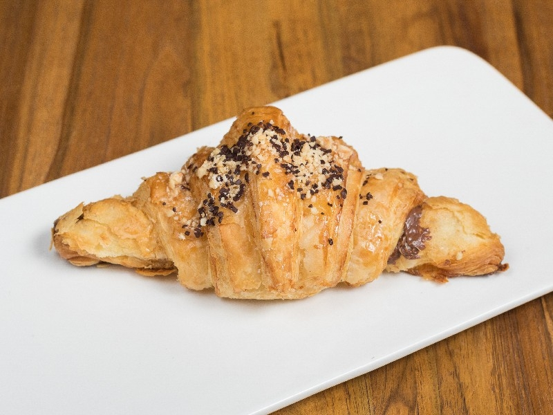
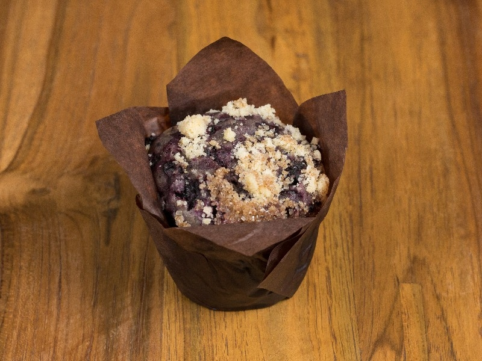
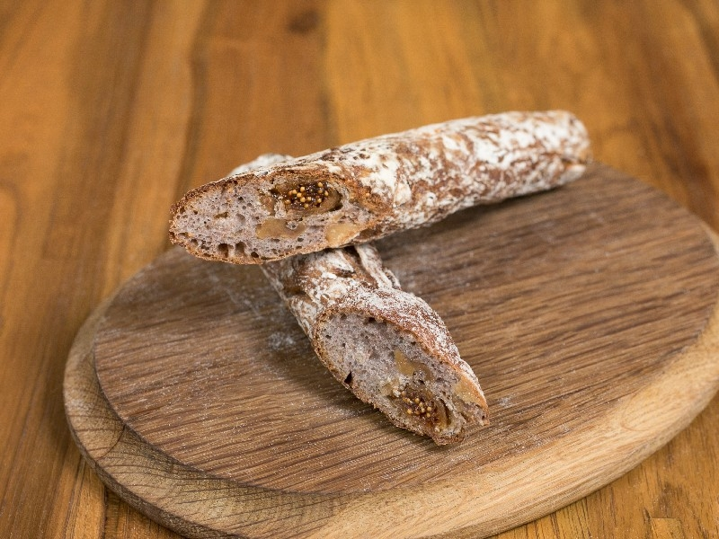
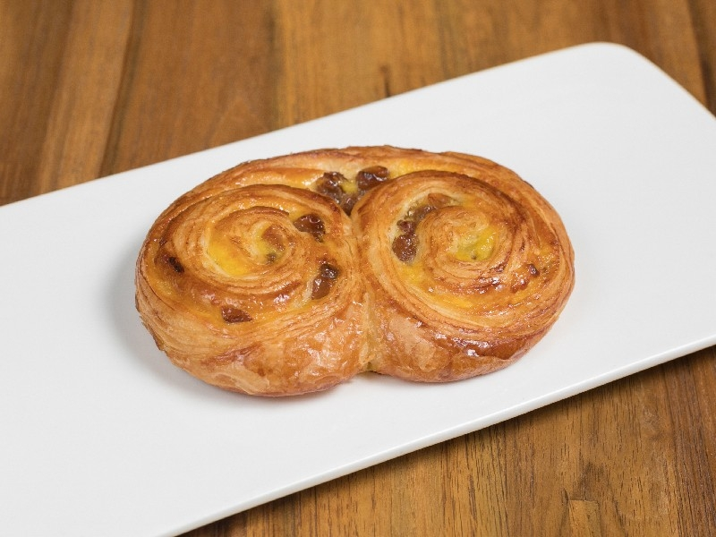
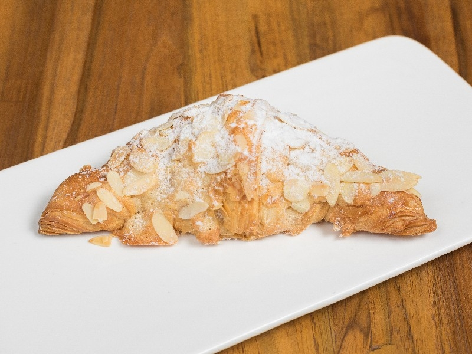
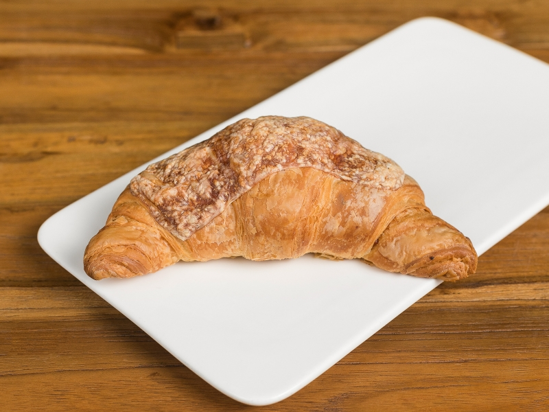
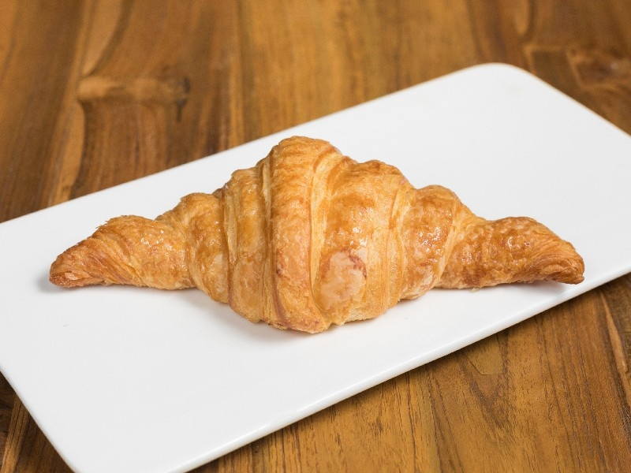

Своя кухня, прямые трансляции, 3 вида кухни и широкая барная карта. Проводим вечеринки. Роскошный интерьер, авторская кухня, вежливые сотрудники и домашний уют. проспект Вернадского, 86Б, Москва - Часы работы и предложения могут меняться.
сылка про кафе менюВЫБОР ПЕКАРЯ Свежая выпечка ручной работы Ассортимент и цены могут отличаться в конкретном кафе. Пожалуйста, уточняйте информацию у персонала Круассан с шоколадом шоколадный или черничный Маффин с фундуком и изюмом Флейта с изюмом Пан-о-разан Круассан с миндалём Круассан с сыром подаётся с маслом Круассан парижский
      я создала кафе под названием кафе к-поп в котором есть вся самое нужное для наших клиентов которое буду приходить в наше кафе и наслаждаться красотами нашего кафе. А может даже напишут статью про кафе и благодаря статье люди начнут приходить к нам. Или еще лучше скажут о нас в новостях и это будет большое плюс для нашего кафе. В нашем заведение вам дадут меню в котором будет написана весе что есть в нашем кафе. ЖДЕМ ВАС С НЕТЕРПЕНИЕМ В НАШЕ КАФЕ!!!
ЗАКАЗАТЬ СТОЛИК
Имя